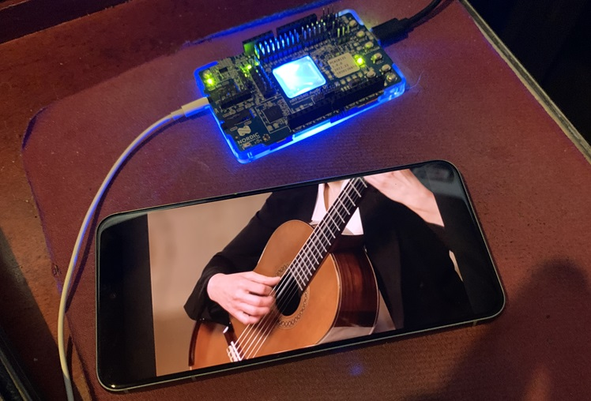
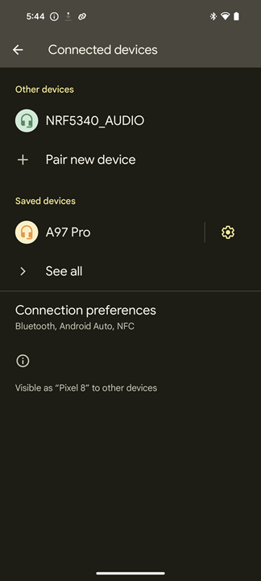

Connecting nrf5340 audio devkit to Pixel 8 Android Phone
I was able to stream audio from my Pixel 8 phone phone running Android 14 to my nrf5340 audio devkit.

Here you see the bluetooth pairing showing the phone connected to the devkit:

First you build the firmware as a headset with CONFIG_AUDIO_DEV=1 flash the firmware and ensure it is advertising. You should see this in the console output:
```log
nRF5340 Audio nRF5340 Audio DK cpuapp
NCS base version: 2.5.0
Cmake run : Mon Dec 04 19:49:23 2023
HL [00:00:00.256,408] <inf> fw_info: ------- DEBUG BUILD -------
HL [00:00:00.256,408] <inf> fw_info: HEADSET left device
HL [00:00:00.267,059] <inf> board_version: Compatible board/HW version found: 1.0.0
HL [00:00:00.300,750] <inf> sd_card: SD card volume size: 30543 MB
HL [00:00:00.336,730] <inf> bt_mgmt: Clearing all bonds
HL [00:00:00.337,066] <inf> bt_mgmt_ctlr_cfg: Controller: LL_ACS_NRF53: Version 5.2 (0x0b), Revision 3393
HL [00:00:00.338,958] <inf> bt_mgmt: Local identity addr: E9:8C:6F:E2:D2:44 (random)
HL [00:00:00.370,025] <inf> bt_mgmt_adv: Local addr: 65:C3:C7:DE:D6:EA (random)
HL [00:00:00.370,513] <inf> bt_mgmt_adv: Advertising successfully started
Next on the Android phone you may need to enable developer mode, then make sure Disable Bluetoioth LE audio is not
enabled. Then Click Pair new device under settings -> Connected devices and look for the one named NRF5340_AUDIO
and click pair. You should see streamctrl_unicast_server: Connected appear in the log.
HL [00:00:57.231,292] <inf> streamctrl_unicast_server: Connected
HL [00:01:04.527,893] <inf> streamctrl_unicast_server: Security changed
HL [00:01:06.545,898] <inf> bt_content_ctrl_media: Discovery of MCS finished
HL [00:03:46.232,238] <inf> bt_rend_vol: Volume = 194, mute state = 0
HL [00:03:55.593,017] <inf> unicast_server: LC3 codec config for sink:
HL [00:03:55.593,017] <inf> unicast_server: Frequency: 24000 Hz
HL [00:03:55.593,017] <inf> unicast_server: Frame Duration: 10000 us
HL [00:03:55.593,048] <inf> unicast_server: Channel allocation: 0x1
HL [00:03:55.593,048] <inf> unicast_server: Octets per frame: 60 (48000 bps)
HL [00:03:55.593,078] <inf> unicast_server: Frames per SDU: 1
HL [00:03:55.690,490] <inf> streamctrl_unicast_server: Presentation delay 10000 us is set by initiator
HL [00:03:56.498,077] <inf> unicast_server: Stream 0x20020e28 started
Here you can see it has negotiated a 24 kHz channel 1 stream. This is because I configured the nrf5340 devkit to run at 24kh because I was testing another device. I’m sure it would also work great at 48 kHz.
Click on the paired device settings icon and enable the switch titled LE Audio. Now open a youtube video and if the
audio is coming out of the phone speakers then click the volume button, and click settings, then change the Play Chrome
on button from This Phone to NRF5340_AUDIO device.
Note that the nrf5340 chip acts as one channel, since normally you would have 2 chips for each earbud. So you will only get the left channel in this case. You can use 2 nrf5340 audio devkits to get full stereo.
THe log will show Data received and perhaps some under runs, but it is working fine and the audio sounds great through
some earbuds.
HL [00:03:56.576,782] <inf> audio_datapath: Drft comp state: CALIB
HL [00:03:56.577,758] <wrn> audio_datapath: Data received, total underruns: 69
HL [00:03:56.676,757] <inf> audio_datapath: Drft comp state: OFFSET
HL [00:03:57.094,177] <wrn> audio_datapath: Data received, total underruns: 75
HL [00:03:57.114,196] <inf> audio_datapath: Drft comp state: LOCKED
HL [00:03:57.120,025] <inf> audio_datapath: Pres comp state: MEAS
HL [00:03:57.168,182] <wrn> audio_datapath: Data received, total underruns: 79
HL [00:03:57.246,490] <wrn> le_audio_rx: BLE ISO RX overrun
HL [00:03:57.256,469] <wrn> le_audio_rx: BLE ISO RX overrun
HL [00:03:57.256,713] <inf> audio_datapath: sdu_ref_us not from consecutive frames (diff: 29999 us)
HL [00:03:57.256,744] <inf> audio_datapath: Pres comp state: WAIT
HL [00:03:57.257,171] <wrn> audio_datapath: Data received, total underruns: 128
HL [00:03:57.356,567] <inf> audio_datapath: Pres comp state: INIT
HL [00:03:57.366,577] <inf> audio_datapath: Pres comp state: MEAS
HL [00:03:57.476,562] <inf> audio_datapath: Pres comp state: WAIT
HL [00:03:57.616,577] <inf> audio_datapath: Pres comp state: INIT
HL [00:03:57.626,586] <inf> audio_datapath: Pres comp state: MEAS
HL [00:03:57.729,187] <wrn> audio_datapath: Data received, total underruns: 141
HL [00:03:57.736,572] <inf> audio_datapath: Pres comp state: WAIT
HL [00:03:57.876,586] <inf> audio_datapath: Pres comp state: INIT
HL [00:03:57.886,566] <inf> audio_datapath: Pres comp state: MEAS
HL [00:03:57.996,582] <inf> audio_datapath: Pres comp state: WAIT
HL [00:03:58.156,494] <wrn> le_audio_rx: BLE ISO RX overrun
HL [00:03:58.166,503] <wrn> le_audio_rx: BLE ISO RX overrun
HL [00:03:58.170,837] <inf> audio_datapath: sdu_ref_us not from consecutive frames (diff: 30000 us)
HL [00:03:58.171,203] <wrn> audio_datapath: Data received, total underruns: 196
HL [00:03:58.172,607] <inf> audio_datapath: Pres comp state: INIT
HL [00:03:58.178,497] <inf> audio_datapath: Pres comp state: MEAS
HL [00:03:58.276,855] <inf> audio_datapath: Pres comp state: WAIT
HL [00:03:58.416,595] <inf> audio_datapath: Pres comp state: INIT
HL [00:03:58.426,574] <inf> audio_datapath: Pres comp state: MEAS
HL [00:03:58.536,590] <inf> audio_datapath: Pres comp state: LOCKED
HL [00:03:59.586,578] <inf> audio_datapath: sdu_ref_us not from consecutive frames (diff: 20000 us)
HL [00:03:59.586,608] <inf> audio_datapath: Pres comp state: WAIT
HL [00:03:59.588,195] <wrn> audio_datapath: Data received, total underruns: 198
HL [00:03:59.610,778] <wrn> bt_ascs: CCID 2 is unknown
HL [00:03:59.650,207] <wrn> audio_datapath: Data received, total underruns: 200
HL [00:03:59.726,501] <wrn> le_audio_rx: BLE ISO RX overrun
HL [00:03:59.736,511] <wrn> le_audio_rx: BLE ISO RX overrun
HL [00:03:59.746,490] <wrn> le_audio_rx: BLE ISO RX overrun
HL [00:03:59.748,413] <inf> audio_datapath: sdu_ref_us not from consecutive frames (diff: 39999 us)
HL [00:03:59.749,206] <wrn> audio_datapath: Data received, total underruns: 269
HL [00:03:59.751,068] <inf> audio_datapath: Pres comp state: INIT
HL [00:03:59.756,835] <inf> audio_datapath: Pres comp state: MEAS
HL [00:03:59.866,577] <inf> audio_datapath: Pres comp state: WAIT
HL [00:04:00.006,591] <inf> audio_datapath: Pres comp state: INIT
HL [00:04:00.016,601] <inf> audio_datapath: Pres comp state: MEAS
HL [00:04:00.126,586] <inf> audio_datapath: Pres comp state: LOCKED
HL [00:04:01.306,518] <wrn> le_audio_rx: BLE ISO RX overrun
HL [00:04:01.316,528] <wrn> le_audio_rx: BLE ISO RX overrun
HL [00:04:01.326,538] <wrn> le_audio_rx: BLE ISO RX overrun
HL [00:04:01.336,517] <wrn> le_audio_rx: BLE ISO RX overrun
HL [00:04:01.346,527] <wrn> le_audio_rx: BLE ISO RX overrun
HL [00:04:01.347,869] <inf> audio_datapath: sdu_ref_us not from consecutive frames (diff: 59996 us)
HL [00:04:01.347,900] <inf> audio_datapath: Pres comp state: WAIT
HL [00:04:01.348,205] <wrn> audio_datapath: Data received, total underruns: 351
HL [00:04:01.446,594] <inf> audio_datapath: Pres comp state: INIT
HL [00:04:01.456,604] <inf> audio_datapath: Pres comp state: MEAS
HL [00:04:01.566,619] <inf> audio_datapath: Pres comp state: WAIT
HL [00:04:01.706,604] <inf> audio_datapath: Pres comp state: INIT
HL [00:04:01.716,644] <inf> audio_datapath: Pres comp state: MEAS
HL [00:04:01.821,228] <wrn> audio_datapath: Data received, total underruns: 356
HL [00:04:01.829,223] <inf> audio_datapath: Pres comp state: WAIT
HL [00:04:01.829,193] <inf> audio_datapath: Saved 480000 bytes to wav file.
HL [00:04:01.966,613] <inf> audio_datapath: Pres comp state: INIT
HL [00:04:01.976,623] <inf> audio_datapath: Pres comp state: MEAS
HL [00:04:02.086,639] <inf> audio_datapath: Pres comp state: WAIT
HL [00:04:02.226,654] <inf> audio_datapath: Pres comp state: INIT
HL [00:04:02.236,602] <inf> audio_datapath: Pres comp state: MEAS
HL [00:04:02.346,618] <inf> audio_datapath: Pres comp state: LOCKED
HL [00:05:16.430,084] <wrn> audio_datapath: Data received, total underruns: 0
HL [00:05:16.483,154] <inf> audio_datapath: Pres comp state: MEAS
HL [00:05:16.484,100] <wrn> audio_datapath: Data received, total underruns: 53
HL [00:05:16.490,112] <inf> audio_datapath: Drft comp state: INIT
HL [00:05:16.491,088] <inf> audio_datapath: Drft comp state: CALIB
HL [00:05:16.493,133] <inf> audio_datapath: Pres comp state: INIT
HL [00:05:16.590,942] <inf> audio_datapath: Drft comp state: OFFSET
HL [00:05:16.634,948] <wrn> audio_datapath: Data received, total underruns: 54
HL [00:05:16.930,786] <inf> audio_datapath: Drft comp state: LOCKED
HL [00:05:16.933,166] <inf> audio_datapath: Pres comp state: MEAS
HL [00:05:17.043,151] <inf> audio_datapath: Pres comp state: WAIT
HL [00:05:17.183,166] <inf> audio_datapath: Pres comp state: INIT
HL [00:05:17.193,176] <inf> audio_datapath: Pres comp state: MEAS
HL [00:05:17.303,161] <inf> audio_datapath: Pres comp state: LOCKED
HL [00:06:43.983,703] <inf> audio_datapath: sdu_ref_us not from consecutive frames (diff: 389990 us)
HL [00:06:43.983,734] <inf> audio_datapath: Pres comp state: WAIT
HL [00:06:43.984,344] <wrn> audio_datapath: Data received, total underruns: 425
HL [00:06:44.085,357] <wrn> audio_datapath: Data received, total underruns: 426
HL [00:06:44.113,708] <inf> audio_datapath: Pres comp state: INIT
HL [00:06:44.123,718] <inf> audio_datapath: Pres comp state: MEAS
HL [00:06:44.233,734] <inf> audio_datapath: Pres comp state: WAIT
HL [00:06:44.373,718] <inf> audio_datapath: Pres comp state: INIT
HL [00:06:44.383,728] <inf> audio_datapath: Pres comp state: MEAS
HL [00:06:44.493,713] <inf> audio_datapath: Pres comp state: LOCKED
HL [00:06:47.333,740] <inf> audio_datapath: sdu_ref_us not from consecutive frames (diff: 159991 us)
HL [00:06:47.333,770] <inf> audio_datapath: Pres comp state: WAIT
HL [00:06:47.334,381] <wrn> audio_datapath: Data received, total underruns: 567
HL [00:06:47.435,394] <wrn> audio_datapath: Data received, total underruns: 568
HL [00:06:47.463,745] <inf> audio_datapath: Pres comp state: INIT
HL [00:06:47.473,754] <inf> audio_datapath: Pres comp state: MEAS
HL [00:06:47.583,740] <inf> audio_datapath: Pres comp state: WAIT
HL [00:06:47.723,754] <inf> audio_datapath: Pres comp state: INIT
HL [00:06:47.733,764] <inf> audio_datapath: Pres comp state: MEAS
HL [00:06:47.843,750] <inf> audio_datapath: Pres comp state: LOCKED
You can now go back to the bluetooth settings on the phone and tell it to forget this device and it will disconnect and go back to advertising.
HL [00:06:53.385,406] <inf> bt_mgmt: Disconnected: 94:45:60:6F:5D:66 (public) (reason 0x13)
HL [00:06:53.385,437] <inf> streamctrl_unicast_server: Disconnected
HL [00:06:53.385,467] <inf> unicast_server: Stream 0x20020e28 released
HL [00:06:53.386,047] <inf> bt_mgmt_adv: Local addr: 65:C3:C7:DE:D6:EA (random)
HL [00:06:53.386,138] <inf> bt_mgmt_adv: Adv directed to: 94:45:60:6F:5D:66 (public).
HL [00:06:53.386,779] <inf> bt_mgmt_adv: Advertising successfully started
HL [00:06:53.389,434] <inf> audio_datapath: Pres comp state: INIT